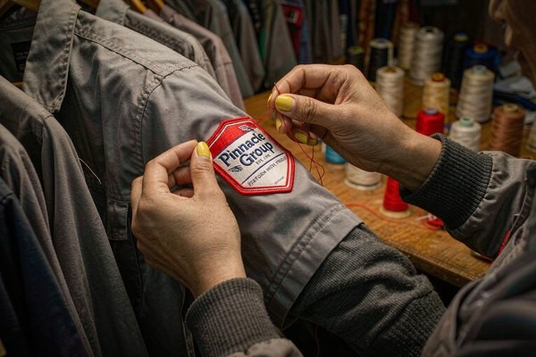

Uniform Patches: Professional Identity Solutions for Every Industry
A staff uniform without identification is just clothing. Uniform patches are what turn it into a promise — the guest can tell staff from strangers at a glance, and the wearer carries the company's name on their shoulder through every shift. This guide covers design standards that survive both the lobby and the laundry, exact placement rules by garment, backing choices for industrial washing, and how to order for teams that keep growing.
Why Patches Outperform Print on Professional Uniforms
The uniform has always done two jobs at once: it identifies the wearer and it vouches for the employer. A stitched patch does both better than screen printing for one physical reason — embroidery holds dimension and light, so the logo stays visible on a shirt that has been washed eighty times, folded, stretched and bleached by fluorescent light. Print fades into a ghost of the logo by month six; a poly-thread patch usually outlives the garment.
There is a trust asymmetry worth noticing too. Guests and customers read stitching as investment — an embroidered badge quietly says the company cares about details, which matters most in exactly the industries that live on first impressions: hospitality, aviation, healthcare, finance. The livery tradition — servants and staff wearing their employer's marks — is centuries old, and modern uniform patches are simply its industrial continuation. Companies already using embroidered marks on other media will find the same logic runs in our corporate logo patches guide.
What Different Industries Need From a Uniform Patch
The same logo serves different masters depending on the floor it walks:
- Hotels and restaurants. Front-of-house crests on the chest or shoulder, often with role marks — the concierge differs from the kitchen by patch, not by uniform. Name patches sit opposite the logo. The hospitality industry standardized much of this on shoulder boards and chest crests borrowed from naval dress.
- Airlines and transport. Wings, shoulder boards and fleet crests with strict placement tolerances — crews must look identical across hubs and continents.
- Corporate and retail. A single chest logo plus occasional role or anniversary badges. Subtlety is the brand statement here.
- Trades and workwear. Mechanic shirts, electrician polos, landscaping crews — the patch needs to survive the harshest wash cycles of any category, which makes construction choices (below) decisive.
- Security and facility services. Chest and shoulder marks with clear hierarchy — supervisor and guard variants — where instant role recognition is a safety function, not a style choice.
Design Standards: Restraint Reads as Professional
Uniform branding lives one meter from the customer's eye, all day, in every photo. The design rules that keep it looking like a credential instead of a sticker:
- Small and calm wins. A 2–2.5 inch chest logo in two or three thread colors reads cleaner at reception distance than a loud 4-inch badge. Anything larger competes with the person wearing it.
- Match the garment's formality. Low-contrast tonal embroidery (navy on navy) suits executive floors; high-contrast marks suit warehouse polos. Same logo, different thread logic.
- Name patches stay simple. First name or full name on a bar or oval, single color, opposite the logo. Script fonts only if they stitch wide enough to hold the 4 mm letter-height minimum that embroidery demands of every name on the payroll.
- Plan the family, not the piece. Decide up front which variants exist — full color for managers, tonal for line staff, a cap version — so every new hire kit assembles from the same digitized files.
Placement: The Rules That Keep a Team Looking Aligned
Nothing undermines a uniform program faster than six staff members wearing the same patch in six positions. Lock the spec before the first order:
| Garment | Standard Position | Typical Size |
|---|---|---|
| Dress shirt / blouse | Left chest, centered between placket and armhole | 2–2.5 in |
| Polos and work shirts | Left chest, or both chest + right sleeve | 2–3 in |
| Outerwear / blazers | Left shoulder or right chest | 2.5–3.5 in |
| Aprons and smocks | Upper center chest, above the pocket line | 2.5–3 in |
| Headwear | Cap front panel | 1.5–2.5 in |
Measure once, write it down, and hand the same numbers to every uniform supplier — the full spacing formulas by garment are in our placement guide. For caps and hats, the front-panel rules differ enough to warrant their own read; our cap branding guide covers them.
Backings: Built for the Industrial Laundry
Commercial uniform programs wash hotter and more often than any household ever will, and that is the single most important constraint in this category:
| Backing | Uniform Fit |
|---|---|
| Sew-on | The default for rented and laundered uniforms — survives industrial cycles indefinitely |
| Iron-on | Fine for ownership models and gentler care; add a stitch reinforcement for hot-wash programs |
| Velcro | Multi-role staff and security, where marks swap between shirts |
| Adhesive | One-day contractors and events only — one hot wash ends it |
The construction trade-offs are detailed in our backing types guide. For most facility and hospitality programs the honest recommendation is sew-on patches applied when uniforms are issued — many providers apply them during garment assembly, which is the moment it costs the least:

Ordering for Teams That Keep Changing
Uniform programs fail at the edges — the new hire who starts Monday, the promotion that needs a different color, the second site that opens in spring. Three habits keep the program smooth:
- Order the crest in bulk, names in waves. The logo patch is identical for everyone; stock it deep. Name patches change with the roster, so order them monthly or quarterly against the actual headcount.
- Keep one digitized master file. Every variant — tonal, cap, sleeve — builds from the same logo digitization, so adding a variant never restarts setup costs.
- Standardize the spec sheet. One page with patch sizes, positions, backing and thread colors keeps a multi-site program identical. Hand it to new uniform vendors as-is.
Because there is no minimum order, replacements cost nothing to source — a single lost badge ships as easily as a thousand. And when the company rebrands, the old patches do not go to waste: they become service-anniversary keepsakes for long-serving staff, a gesture that costs the company nothing and gets remembered.
Frequently Asked Questions (FAQ)
Q1: What size should a company logo patch be on a uniform?
2 to 2.5 inches for chest placement on shirts and blouses, 2.5 to 3 inches on outerwear and aprons. Anything larger starts competing with the person; anything smaller stops reading from conversation distance. Name bars typically run 1 to 1.5 inches tall.
Q2: Which backing survives commercial laundry service?
Sew-on is the reliable choice for uniforms laundered commercially at high temperatures. Iron-on performs well under household care but should be stitch-reinforced for industrial hot-wash programs. Adhesive backing is limited to single-day use.
Q3: Where should the logo and name patches sit?
Logo on the left chest (or shoulder for outerwear), name patch on the right chest, opposite the logo. Cap marks go centered on the front panel. Write the exact measurement into your uniform spec sheet so every site and supplier applies patches identically.
Q4: Can we order patches for staff who join throughout the year?
Yes. Order the shared logo patch in bulk with your first run, then order name patches in small waves as the roster changes — there is no minimum order, so even a single replacement badge ships economically. Keep one digitized master file so every wave matches exactly.
Q5: Embroidered, woven or printed patches for uniforms?
Embroidered for classic chest crests and shoulder marks — the texture reads as premium up close. Woven suits logos with fine detail or small text that embroidery would blur. Printed (sublimated) fits full-color gradients. Most uniform programs use embroidered crests plus woven name bars.
Conclusion: A Small Patch That Carries the Whole Brand
Uniform patches are the cheapest brand asset a service company will ever buy and the one customers touch most often — every check-in, every table, every delivery. Design it calm enough to look like a credential, place it identically on every body, back it for the laundry it will actually meet, and order the logo deep while ordering names shallow. Do that, and the patch quietly does its job through every shift.
Send us your company logo and uniform photos, and we will digitize the crest free, match your thread colors, and return a proof within 12 hours. No minimum order, from a single storefront to a national chain. Request a free quote and put your mark on every shoulder.